Bulbasaur e sua linha evolutiva!
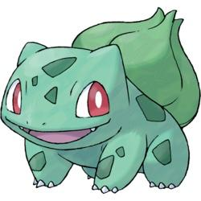 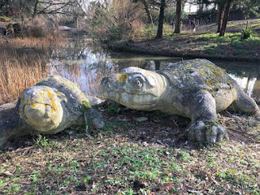Bulbasaur o lagarto com bulbo, original de Kanto e um dos preferidos para começar a jornada Pokémon. Sua aparência nos lembra um lagarto quadrúpede, o Dicynodon, com um bulbo nas costas e sua coloração verde com manchas de um verde mais escuro, se assemelha a alguns répteis. O bulbo em suas costas nos lembras o da tulipa, flor que junta nutrientes ao ser exposta ao sol para se abrir (se assemelhando ao processo de evolução do Bulbasaur).
O lagarto ao qual citamos é o extinto Dicynodon que fazia parte da família dos dicinodonte. Seu tamanho varia de 30 cm a 11 m, e pesava cerca de 800 gramas até 1,5 toneladas. A cabeça lembra a de uma tartaruga e o bico córneo era usado para cortar as plantas que comia. Foi extinto no período triássico. O grupo Dicynodontia é o primeiro de vertebrados que conseguiram ingerir plantas com sucesso, podendo citar que o Bulbasaur é um Pokémon do tipo grama e venenoso e a parte grama se vem deste grupo e a venenosa vem do bulbo.
Após chegar ao nível 16 nos jogos ou tomando sol fazendo seu bulbo desabrochar, Bulbasaur evolui para o Ivysaur.
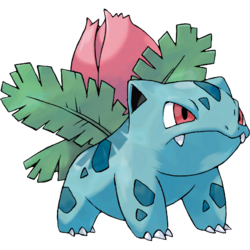 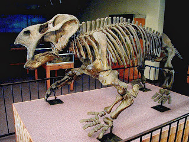Com o formato de quadrúpede ainda, o Ivysaur muda pouco na sua evolução, se tornando apenas mais azulado em sua cor e suas presas sendo expostas. As patas traseiras ficam mais fortes para aguentar o peso da flor que está se desabrochada em suas costas. Com a evolução, a semelhança passa a ser com o Placerias, também da mesma infraordem dos Dicynodontia, sendo maior e com a cor mais azulada que o Dicynodon, onde observa-se também que os membros traseiros são mais grossos nesta parte da família, ao qual se assemelha com o Ivysaur.
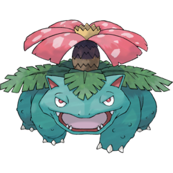 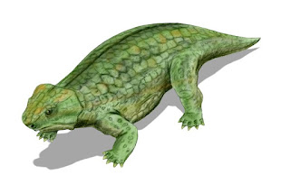Ao chegar no nível 32 ou tomar grande quantidade de sol, e liberar o leve aroma de sua flor, chegamos ao Venusaur, o Pokémon quadrúpede com pele esverdeada e azulada, diferente de suas pré evoluções. Nesta fase já é possível ver os dois dentes pontiagudos em sua mandíbula superior, junto de quatro dentes pontiagudos em sua mandíbula inferior; possui três dedos com garras em cada pé, com os membros grossos para aguentar seu peso e de sua flor, que é onde vemos a diferença entre Venusaur fêmea e macho, onde a fêmea possui uma pequena semente na flor em suas costas. O Anthodon, possui a mesma fisionomia que o venusaur sendo possível a diferença apenas em sua cauda que em si é maior, notando que suas costas são largas para caber uma flor. Esta seria a família de dinossauros que comparamos com a linha evolutiva do bulbasuar.
Já em sua flor, se observada diretamente em todas as fases, se assemelha as fases da tulipa (Liliaceae), que em sua fase bulbo precisa tomar sol para florescer igual citado na entrada da dex em Pokémon Ruby:
O bulbo precisa juntar energia, esta recebida pelo sol por no mínimo 6 horas por dia, libera um pendão parecido com o botão do Ivysaur ao qual continua juntando energia, e quando está para desabrochar começa a liberar um aroma doce, ao qual pertence a flor que floresce igual nos Venusaur, que chega ao seu estágio final uma flor, de pendão grande e com pétalas chamativas de cores fortes.
Charmander e sua linha evolutiva!
Charmander é o Pokémon de número #004 na dex, da tipagem fogo puro neste primeiro estágio. É fácil assemelhar a aparência do pequeno inicial a Salamandra Vermelha (Pseudotriton ruber), da família Plethodontidae. Vale lembrar que salamandras não são seres bípedes como Charmander.
A Salamandra vermelha costuma ter de 5 a 8 centímetros em sua fase adulta, dado que não se aplica ao Charmander, mas o fato da associação está em sua coloração. A cor da pele da Salamandra Vermelha é vibrante, e vai se tornando opaco com o passar dos anos do réptil. Com base nessa informação podemos fundamentar as cores do Pokémon em seus estágios, que é mais vibrante quando Charmander evolui para Charmeleon, e se torna mais claro quando atinge o estágio de Charizard. É comum que essa espécie de Salamandra também adquira manchas pretas em suas costas quando atingem uma idade avançada.
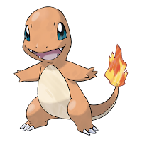 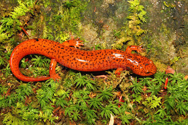Uma dúvida pode surgir quanto a escolha de réptil para representar o Charmander, mas a resposta está associada a um antigo mito. Em ocasiões de incêndios em florestas nos séculos passados, acreditava-se que as salamandras podiam emergir das cinzas. O que acontecia na verdade era a liberação de uma resina pela pele que as protegia com eficácia contra o fogo. Dada essa informação, fica justificável a escolha do réptil.
Ao atingir o nível 16 nos jogos da franquia, Charmander evolui para Charmeleon. No processo de evolução este ganha garras mais afiadas nos membros superiores, para melhor aproveitamento de sua fase terrestre, além de ter estes mesmos membros alongados, o que permite ao Pokémon se locomover com maior velocidade e praticidade. Os caninos de Charmeleon ganham aspecto mais pontiagudo, ao contrário de seu estágio anterior, onde os caninos do maxilar eram arredondados - caninos que auxiliam o Pokémon em sua sobrevivência, já que é uma fase de transição para sua fase adulta.
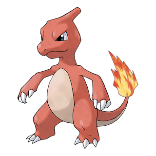Atingindo o nível 36, Charmeleon evolui para Charizard, catalogado como Pokémon Flamejante. Charizard é indiscutivelmente um dragão em sua aparência (lembrando que sua tipagem carrega os tipos fogo e voador); mas ainda assim é possível assemelhar sua ferocidade com a do Dragão de Komodo (Varanus komodoenses), da família Varanidae. Dragões de Komodo são seres hostis, capazes de atacar e comer presas com até 80% de seu tamanho.
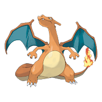 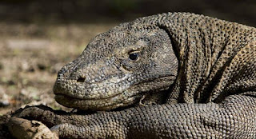Envolvendo um pouco de química temos a curiosa chama na ponta da cauda dos três estágios. Para que a chama possa queimar, deve haver um combustível interno circulando o corpo do Pokémon, que ao entrar em contato com o oxigênio na ponta da cauda, entra em combustão. A descrição de Charmander na dex do jogo Ruby nos da um fato interessante
Esta descrição nos leva a imaginar uma conexão do sistema nervoso do Pokémon, com o sistema por onde circula o combustível que mantém o fogo de sua cauda. A produção em grande quantidade do fogo interno levaria o monstrinho a evoluir, na necessidade de adquirir maior resistência e capacidade de conter o fogo. São inúmeras as vezes que já vimos um Pokémon do tipo fogo evoluir após uma intensa batalha, onde precisou elevar suas chamas, não é mesmo?!
Esse foi o segundo capítulo da nossa série sobre biologia em Pokémon. O que acham, nossa teoria sobre evolução por necessidade de expansão tem fundamentos? Deixem aqui suas opiniões! Lembrando, nosso intuito é apenas analisar de um ponto de vista científico todas as informações dadas através dos jogos ou animes.
Squirtle e sua linha evolutiva
Squirtle é o Pokémon número #007 na dex, tipagem água puro até seu estágio final. A aparência deste monstrinho se assemelha a Tartaruga-verde ou Tartaruga-aruanã (Chelonia mydas), da família Cheloniidae. Lembrando que diferente do Squirtle as Aruanã são "quadrúpedes".
 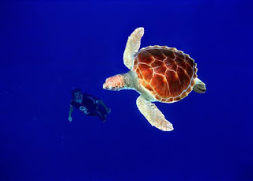
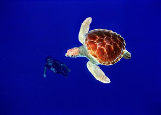
Os Squirtles recém nascidos em vida livre, nascem bem pequenos e com a carapaça mole e frágil, servindo de alimentos para grandes predadores como Croconaw, Fearow, Kingler e Gyrados, após o nascimento os mesmo atravessam a faixa de areia para chegar ao mar ou lago, por não terem a proteção dos pais como outros Pokémon são presas fáceis, após chegar a água, local ao qual seus movimentos são mais rápidos, e com o tempo em baixo d’água seu casco começa a endurecer, dando ele proteção e resistência a ataques de grandes Pokémon, claramente esta parte da vida do Squirtle se origina da vida da tartaruga-verde ao qual passa pela mesma situação nascendo em águas costeiras com muita vegetação (áreas de forrageio), ilhas ou baías onde estão protegidas, tanto contra animais como aves, caranguejos e animais aquáticos.

Ao chegar ao nível 16, Squirtle evolui para Wartotle a tartaruga com orelha. Neste estágio evolutivo, suas garras e os dentes são mais desenvolvidos e ficam mais nítidos e maiores, mas a principal diferença de sua fase anterior e sua cauda e orelha, a cauda e maior e mais macia e sua orelha se torna grandes e peludas que utiliza para manter o equilíbrio ao nadar em altas velocidades. Tartarugas com orelhas, conhecemos apenas a Tartaruga-de-Orelhas-Vermelhas (Trachemys scripta elegans), animal com duas faixas na cabeça de cor vermelha ao qual se assimila a orelhas, sendo considerado serem ótimos pets para aqueles que querem animais sossegados e tranquilos, se assemelhando as histórias contadas do wartortle, que conta que são populares entre idosos por conta de seu modo calmo e tranquilo e por sua cauda ser símbolo de longevidade.
.jpeg) 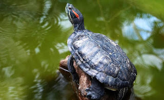
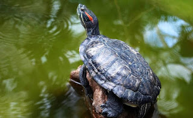
Chegando ao level 36 Wartortle evolui para Blastoise, este Pokémon diferente das suas pré evoluções carrega dois grandes canhões que saem de seu casco, de onde ele lança poderosos jatos de água. O animal ao qual representa é a maior tartaruga aquática do mundo a tartaruga-de-couro (Dermochelys coriacea). A mesma pode chegar até 3 metros de comprimento e pesar 900 kg, sendo similar ao Blastoise, com a diferença de seu modo de vida que ela vive mais no ambiente aquático indo apenas para desovas para a terra. Os canhões deste monstrinho vem se desenvolvendo desde do Squirtle sua primeira evolução, nele a bexiga d’água fica em seu interior onde ele consegue armazenar uma grande quantidade de líquido que pode ser expelido com grande pressão como no famoso ataque jato d’água, quando evolui para blastoise está bexiga se expande por necessidade, nesta expansão o corpo do Pokémon desenvolve os canhões, que são ossos feitos de queratina por ligamento, estes ossos ligam na bexiga e por ela disparam a água, funcionado como tubo orgânicos, todo o bombeamento tem o auxílio dos músculos do mesmo. Os canhões por serem de queratina tem a forma de retração igual as garras dos gatos, que são feitas do mesmo material. Ao qual ele consegue retrair quando quiser, tornando este Pokémon uns dos mais forte do tipo água.

.jpeg)
Caterpie e sua linha evolutiva!
Chegou a vez de falarmos sobre Caterpie e sua linha evolutiva. Para entendermos os conceitos por trás da pequena lagarta de Kanto, precisamos entender um pouco mais sobres as lagartas de modo geral e resumido.
As lagartas fazem parte da ordem das Lepidopteras, a ordem que compreende borboletas e mariposas. São uma das ordens em maior abundância no planeta, principalmente em zonas tropicais. Lagartas desta ordem podem ser consideradas pragas em muitas ocasiões, por se alimentar de plantações, mas em alguns locais do globo, também podem servir como alimento.
Caterpie é um exemplo das Lepidopteras. A pequena lagarta de Kanto se assemelha a Lagarta de Laranjeira, que além de posicionar parte de seu tronco para cima, de modo semelhante ao pequeno Pokémon, possui um par de antenas bifurcadas, podendo se retrair, e serem usadas quando esta espécie se sente ameaçada. Além de usadas como ameaça física, esse tipo de antena pode emitir um cheiro desconfortável para o predador, o mesmo do qual a dex da versão Gold nos informa:
Para sua proteção, ele libera um cheiro horrível da antena em sua cabeça para afastar os inimigos.
Ainda seguindo algumas informações de outras dex, Caterpie é dono de um apetite feroz, igualmente ocorre na vida das lagartas da ordem Lepidoptera. Sua cor esverdeada pode estar associada tanto a sua alimentação a base de folhas, quanto a sua necessidade de se camuflar com o meio ambiente - vamos dizer que Caterpie possui a habilidade de camuflagem por homocromia, temo que indica a situação onde o ser possui a mesma coloração do ambiente onde vive. Não por menos, Caterpie pode ser encontrado em várias rotas de floresta.

Ainda referente a lagarta, podemos assemelhar características físicas á lagarta da espécie Papilio troilus, apelidado de Lagarta Caterpie em homenagem as semelhanças do pequeno Pokémon. Até mesmo sua variante de cor lembra a versão shiny de Caterpie.
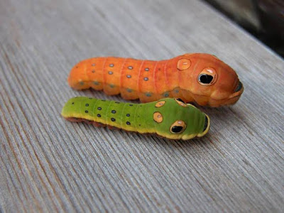Após atingir o nível 7, a pequena lagarta produz sua crisálida, evoluindo para Metapod. Na fase da pupa, as lagartas apresentam pouco ou nenhum movimento dentro desta (quem não se lembra da famosa batalha de Metapods não é mesmo?!). Enquanto está em estado de pupa, Metapod permanece imóvel para não expor o interior de sua casca ao risco.
A evolução para o último estágio é breve, logo no nível 10 Metapod evolui para Butterfree. Neste estágio Butterfree conta com várias características que auxiliam em sua sobrevivência. A primeira é a formação de seus olhos, constituídos por várias miríades que aumentam seu campo de visão. Em suas asas estão pequenas escamas que liberam um pó tóxico durante o voo quando se sente ameaçada.
Se formos seguir uma linha lógica por trás da evolução da linha evolutiva de Caterpie, de certa forma também acontece pelo acumulo de energia, mas por meio de sua alimentação. Ao ingerir uma quantidade eficiente de calorias, Caterpie consegue energia necessária para formar sua crisálida. Com o restante de sua energia acumulada na fase da pupa, mantida pela pouca movimentação (ou seja, menor gasto de energia) é possível que em um curto período de tempo consiga atingir seu último estágio evolutivo. Neste estágio, sua alimentação muda e passa ser a base de polén.
Por mais que a larva de Papilio troilus esteja associada com Caterpie, não é possível dizer a mesma coisa de sua borboleta. São inúmeras espécies de borboleta espalhadas pelo globo, cada uma com variações dos mais diversos tipos nas cores e formatos das asas. Portanto, seguimos sem uma associação direta a qualquer borboleta que possa ter inspirado Butterfree.

Rattata e sua linha evolutiva!
Rattata é o Pokémon #019 na dex, tipagem normal até seu estágio final. E repararemos que este monstrinho se assemelha aos ratos comuns mudando apenas sua pelagem de cor roxa. Este pequeno Pokémon em alguns jogos como Go, é considerado uma praga, e na vida real seu representante também não é diferente. Rattata se tornou o roedor de Kanto mais odiado, por conta de ser encontrado em qualquer local como bosques, cidades e campos. Sai desses locais para roubar comida de viajantes novatos ou mais experientes como visto em Pokémon: Eu Escolho Você!
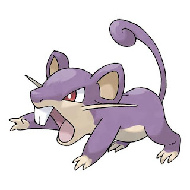 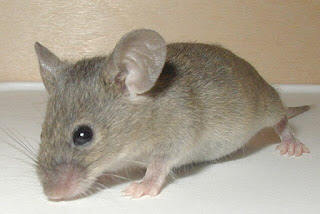Existindo mais de 1700 tipos de ratos, decidimos focar no mais comum, o Camundongo (Mus musculus), podemos ver nele o Rattata por ser comum encontrado em vários locais do globo, considerado ser uma espécie cosmopolita, se adaptando a uma grande variedade de condições ambientais, desde grandes cidade a campos. Sendo um animal com hábitos noturnos, os camundongos se acomodam em qualquer local, escolhido para suprir suas necessidades.
As principais características observadas neste animal, são o olfato altamente desenvolvido, ao qual é utilizado para algumas funções fora detectar alimento e predadores, também utilizada para determinar vários sinais de comportamento; a visão diferente do olfato é precária não conseguindo distingue cores, com sua retina apresentando poucos cones. O corpo é considerado uns dos menores entre as espécies, mas sua cauda pode atingir um comprimento maior que o corpo. Suas grandes orelhas ajudam a possuir uma audição aguda.
Ao chegar no level 20, temos o grande Pokémon roedor Raticate. Mesmo sendo apresentado frequentemente nas patas traseiras, também é um quadrúpede. Sua principal cor, diferente de sua pré evolução é alaranjada e com sua barriga na cor creme igual o Rattata. Sua fisionomia lembra as grandes Ratazanas por olhos pretos, estreitos e orelhas com bordas irregulares, grandes incisivos que crescem constantemente.
"As presas robustas de Raticate crescem continuamente. Para mantê-las afiadas, rói troncos e pedras. Pode até mesmo roer as paredes das casas."
Os três grandes bigodes em cada lado do rosto, são utilizados para manter o equilíbrio e detectar mudanças no ambiente. Seus braços são curtos e os pés palmados, que lhe permite nadar, utilizando sua longa cauda escamosa como timão.
Ratazana (Rattus norvegicus) é a visão animal de um Raticatte, como podemos observar nas imagens à semelhança entre ambos.
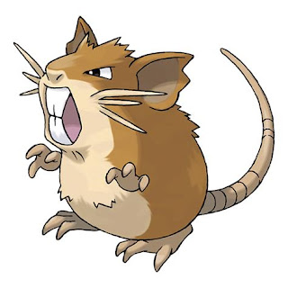 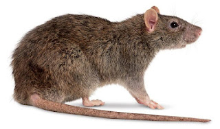As Ratazanas tem hábito noturno e buscam em construções urbanas água, alimento e abrigo, e quando são vistas durante o dia, é porque a quantidade de membros naquele local já está alto. Sua reprodução é uma das mais fáceis e rápidas. Com um número alto de indivíduos por gestação, as Ratazanas são os maiores roedores, tanto em estrutura óssea medindo em torno de 25 cm, tanto em crias que a gestação dura em torno de 24 dias.
São ótimos nadadores e escavadores, maioria das vezes precisam fugir para evitar sua morte, ambas características são imponentes para sobrevivência. Como são ótimos escavadores vivem em tocas perfuradas na terra ou em locais protegidos juntos a estruturas de concreto, para manter suas proles vivas e em segurança. São encontrados em rios e beiras de córregos, redes de esgoto em grandes cidades, e aterros sanitários entre outros locais do globo.
Spearow e sua linha evolutiva!
Spearow é o Pokémon #21 na dex, tipagem normal/voador até seu estágio final. Este monstrinho como o próprio nome diz é o Pardal no mundo Pokémon. Está pequena ave tem a plumagem áspera e a cor marrom em sua cabeça e cauda, seus olhos são da cor castanha escura e estreitos com as pupilas brancas e um bico curto dando a ele um semblante de mau.
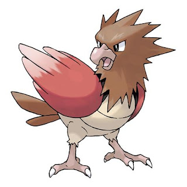 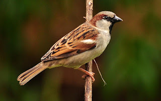Para completar a fisionomia do Pokémon temos duas asas de cor vermelho num degrade até as pontas que ficam mais claras e com um lado inferior bege com duas listras finas e nas suas costas são cobertas por penas negras, utilizadas pra se esconder no gramado de outros Pokémon. Diferente do Pidgey em quesito voo, é capaz de voar rapidamente para proteger seu território, mas precisa bater suas asas em alta velocidade pra manter-se no alto. Os seus gritos altos, conseguem ser ouvidos á quilômetros de distância, são usados para alertar seus companheiros quando estão em perigos, tanto pra chamá-los para ajudar quanto para fugir do perigo eminente.
No anime, Ash é atacado por um bando de Spearow no episódio Pokémon - Eu Escolho Você, depois do protagonista ter atingido com uma pedra o Spearow na cabeça tentando enfraquecê-lo para capturar, já que o Pikachu se recusava ha obedecer Ash, o mesmo confundiu a pequena ave com o Pidgey, com isto Ash e atacado por uma revoada de Spearow.
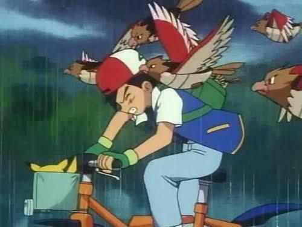Com o próprio nome diz, a ave ao qual o Spearow e inspirada e o Pardal (Passer domesticus), pertencendo a família Passeridae e em inglês é conhecido como House Sparrow. Ele é originário da Europa foi introduzida no Brasil em 1906, para controle biológico de pragas, tornando esta ave exótica no país, e atualmente uma das mais populares ficando junto com os Pombos. A alimentação desta ave, é generalista adaptando com qualquer alimento por isto é fácil de se ver revoadas em grandes cidades a pequenos vilarejos, quem passa por uma praça e possível ouvir o barulhos dos pardais que estão se recolhendo para dormir em bando.
Outra característica desta ave é o dimorfismo sexual, características que diferencia o macho da fêmea no reino animal. O macho possui uma plumagem mais escura, o bico preto e uma mancha preta na garganta, está mancha tem tamanho variável e é utilizado como status de dominância perante aos outros pardais machos. Já a fêmea tem tons mais claros e apresenta uma listra supraciliar.
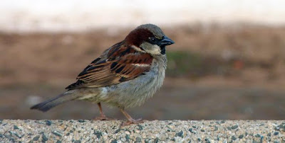
Ao chegar no level 20, temos o terror do céus de kanto, Fearow. Suas asas possui uma grande curvatura e consegue carregar grande peso em suas costas, sua penas são da cor laranja com uma crista vermelhas na cabeça e um bico afiado que pode perfurar uma rocha, sendo temido pelos Pokémon quando ataca seu rasante no céus de kanto. O Fearow é um Pokemon que lembra um Carará, só que com a diferença destas aves e sua incrível velocidade no céus, conseguindo até ultrapassar um trem.
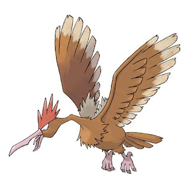 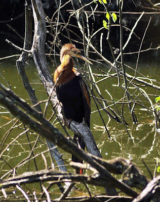Se olhar nos céus de Viridian pode se observar Fearows brigando por território e pela posse de líder do bando decidindo quem é o mais forte entre eles, outra batalha que pode se ver nos céus e entre ele e seu rival Pidgeot, vivem disputando para ver quem comanda o céus de kanto. Nos tempos remotos, as duras e ásperas penas do Fearow eram usadas como instrumento de escrita, já os bicos por serem extremamente resistentes, são usados para catar piolhos e carrapatos de Tauros e Miltanks.
Os Carará ou Biguatinga (Anhingidae), possui cerca de 88 centímetros, com o peso variando 1,2 a 1,35 quilogramas, a sua envergadura mede em torno cerca de 120 centímetros, lembrando as grandes asas do Fearow. Está ave aquática lembra o biguá, com a distinção notável em suas asas esbranquiçadas, seu grande pescoço fino e longo possui 20 vértebras, onde termina em um grande bico longo e pontiagudo, serrilhado e em forma adaga, se tornando util para fisgar peixes.
Possui uma cauda longa, em formato de espátula que é utilizado abaixo d’água para o nado junto com os pés com membranas natatórias. Diferente de outras aves aquáticas não possui glândula uropigiana, tornando suas penas não impermeáveis, não segregam óleo para manter a água à distância. A vantagem de não segregar este óleo as penas armazenam quantidades de água dando ao animal uma má flutuação, que permite um mergulho mais eficiente debaixo de água.
Igual os Pardais possui dimorfismo sexual, sendo que a fêmea é diferente do macho pela colocação, na fêmea a cor creme domina a maior parte da ave pescoço, peito e dorso, já no macho tem uma crista negra e cores mais vivas. Sendo encontrando do Sul dos Estados Unidos até a América do Sul, no Brasil e possível localizá-la em toda a sua extensão.
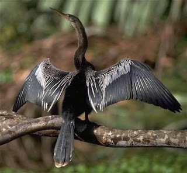 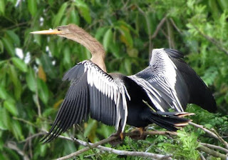Sandshrew e sua linha evolutiva!
Sandshrew é o Pokémon #27 na Dex, tipagem Terra até seu estágio final. Este monstrinho, o qual seu nome significa cogumelo de areia, se encontra nas principais rotas do jogo. Sua couraça começa nas suas costas e vai até a metade de sua cabeça, cobrindo seus braços e pernas com a coloração em amarelo-dourado.
Este Pokémon é marcado pela sua couraça a qual no momento de ataque, se enrola e fica em formato de bola, pronta para atacar. No anime a primeira aparição deste querido Pokémon é no episódio 8: "O Caminho Para a Liga Pokémon", o qual ele aparece no ginásio do A.J. sendo o Pokémon mais forte de todo o ginásio.
Analisando o Pokémon podemos ver dois tipos de animais: Tatu-Bola e Pangolim. Iremos focar no primeiro para este Pokémon.
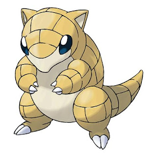 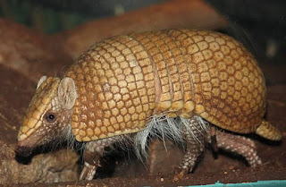Tatu-bola (T. tricinctus) pertencendo à família Dasypodidae, conhecido popularmente na área da caatinga e sendo conhecido mundialmente após ser mascote da copa de 2014, se tornando o Fuleco; é um animal que mede em torno de 30 cm de comprimento, com a coloração marrom, sendo uns dos únicos tatus que possuem a capacidade de se enrolar completamente dentro da carapaça, assumindo o formato de bola de onde vem seu nome. Esta espécie de Tatu se encontra ameaçada de extinção por sua carne se consumida em vários locais do país. Este animal insetívoro utiliza tocas cavadas na terra por outros animais, tanto como moradia ou para fugir dos predadores ao qual o cercam.
Ao atingir nível 22. o Sandshrew começa a cavar mais fundo na terra, e com isso suas garras começam a crescer. Com o aumento da profundidade as rochas são mais duras e a necessidade de possuir garras maiores se torna evidente. Os resíduos desta escavação se juntam a carapaça do Pokémon e com a profundidade e a temperatura aumentando, os resíduos começam a se solidificar na carapaça, surgindo os espinhos, onde este Pokémon evolui para Sandslash.
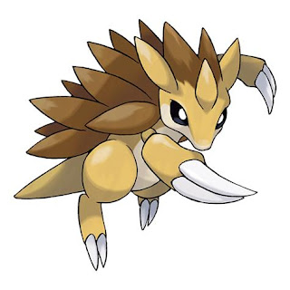 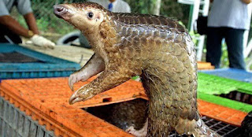O Pangolim (Manis temminckii), da família Manidae. O corpo deste animal é coberto de escamas e quando se enrola se torna uma bola de espinhos protegendo a parte sem cobertura de seu corpo. A aparência deste modo de defesa fica semelhante à do ouriço-cacheiro e essa bola de espinhos é seu maior mecanismo de defesa quando se sente ameaçado. Por não possuir dentes. se alimentam de insetos sendo principalmente de formigas que captura com sua grande língua viscosa que mede quase o tamanho de seu corpo.
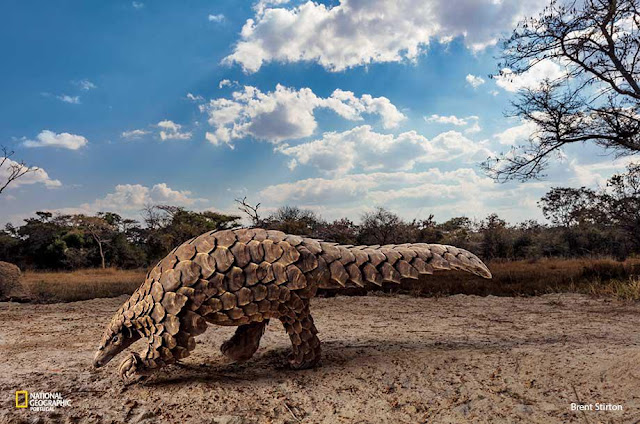Nesta espécie de animal podemos observar uma evolução convergente ao qual animais de grupos diferente evoluem com morfologia semelhantes. O exemplo é a sua alimentação semelhantes ao grandes Tamanduás que utilizam sua língua para alimentar de cupins. Infelizmente este querido animal é caçado e utilizado como peculiaridade gastronômica pelas populações das zonas tropicais da Ásia e da África, e suas escamas são traficadas para serem utilizadas como afrodisíaco.
Weedle e sua linha evolutiva!
Weedle é o Pokémon #013 na dex, tipagem inseto venenoso até seu estágio final. A aparência deste monstrinho se assemelha a larva das abelhas, ao qual sua evolução final o nome significa abelha furadeira.
Weedle, pode ser encontrada nas principais rotas e florestas de todos os jogos, e suas principais diferenças de sua contra parte o Cartepie e o ferrão venenoso que nasce em sua cabeça e sua alimentação, que o inseto procura apenas as melhores folhas para se alimentar. O veneno deste pequeno Pokémon após ser “tratado” pode ser letal ao ser humano.
As larvas da abelha pertence à família da Apidae, ao qual é um dos exemplares mais conhecidos, que no final do ciclo de vida temos a Abelha-Europeia. A fase larvar das abelhas diferente do Weedle, ocorre dentro de um alvéolo, onde é depositado um ovo no fundo deste local que após 3 dias nasce a larva, que é alimentada no local, e a mesma passa por 5 estágios de crescimento, sempre trocando sua cutícula (pele) após o final de cada estágio. No final da fase larval que ocorre 5 a 6 dias após o nascimento, o alvéolo se fecha e a larva muda de posição (única mudança que ocorre desde do nascimento), ficando reta e imóvel. Após isto, entra na fase pré pupa, não se alimentando mais e começando a tecer seu casulo.
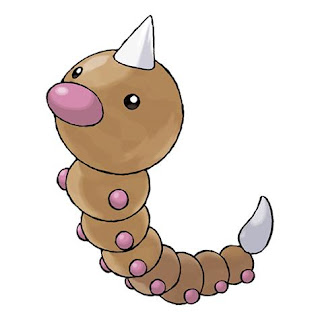 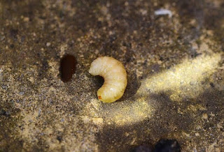Após o Weedle se alimentar das melhores folhas, ele entra em estado de evolução, evoluindo para o Kakuna o Pokémon casulo. Este Pokémon diferente do Metapod, pode ser visto em grandes colônias nas árvores e são sempre guardados por um enxame de Beedrill, que protegem para o momento da evolução. Este Pokémon passou por um próprio processo de evolução, conta que os primeiros Kakuna possuíam ferrão igual sua evolução, com o passar das gerações este ferrões foram sumidos e hoje chegaram a aparência atual.
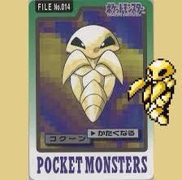 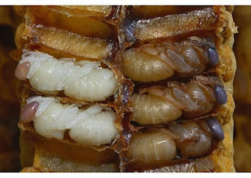A fase pupa já é possível distinguir a cabeça, o tórax e o abdômen, visualmente os olhos, pernas, asas, antenas e partes bucais. A coloração começa a mudar tanto nos olhos quanto no corpo até chegar na cor de uma abelha adulta. Toda esta fase de transformação ao qual a abelha passa e denominado metamorfose.
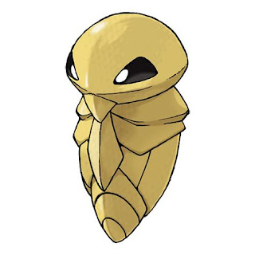 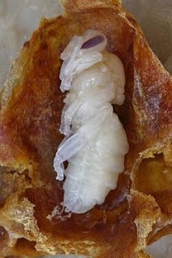Com o acúmulo de energia, o Kakuna começa a liberar um calor que aqueles poucos que conseguem colocar a mão em seu casco consegue sentir, a partir daquele momento o Pokémon está pronto para evoluir, e com a evolução chega o terror da floresta de Kanto Beedrill o Pokémon Abelha. Ele é baseado em uma abelha com seus olhos vermelhos e a cor do corpo amarelo com listras pretas, as antenas cinzas tem o formato do "7".
Os dois “braços” terminam em ferrões que possuem grande dose de veneno, mais forte que seu primeiro estágio evolutivo, as penas são finas e cinzas e possui outro ferrão amarelo e sua locomoção fica por conta de seus pares de asas, uma verdadeira abelha Pokémon. A Abelha-Europeia (Apis mellifera), pertencia à região da Europa, hoje já faz parte das Américas. As abelhas em geral não só fazem o delicioso mel ao qual estamos acostumados a comer, como também fazem parte do grupo dos principais animais de nossa fauna, que polinizam flores e frutos, tornando elas as principais polinizadoras do nosso globo.
A Abelha-Europeia vivem em colmeias formadas por uma ou no máximo duas rainha ou abelha-mestra, obreiras ou abelhas-operarias (entre 10 mil e 15 mil) e entre 500 e 1.500 zangões, que são os machos. As fêmeas diferenciam-se dos zangãos (machos) por possuírem ferrão. Nesta parte da vida das Abelhas podemos assimilar ao um conto do mundo Pokémon, que diz que em algumas florestas é possível ver ninhos de Beedrill com Vespiquen, sendo Breedrill considerado um zangão e a Vespiquen uma abelha rainha.
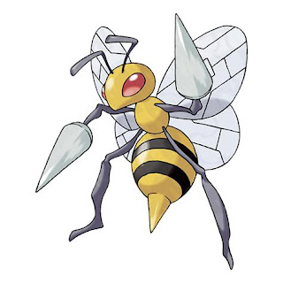 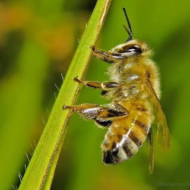